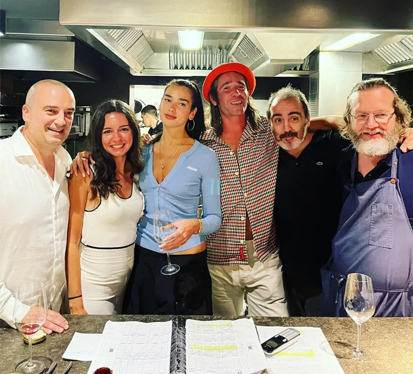
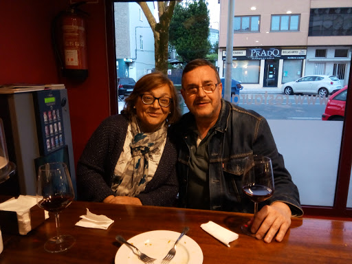

CARTA
Nosotros
Después de conocer el mercado peruano por más de 4 años y tras su gran aceptación del platillo más emblemático, de la ciudad de Lima, Criollos, retoma sus raíces y su filosofía de revolucionar la manera de comer la comida peruana con un nuevo concepto.
Criollos es un concepto local que ofrece platos criollos con estilo de las regiones mas emblematicas del Peru. Somos una empresa que se apasiona por el medio ambiente, los procesos artesanales, la economía local y la comida de alta calidad.
Te esperamos !!

Haz una reserva
Por disposición oficial redujimos el número de mesas por lo que te recomendamos hacer reservación.Te recordamos que no podemos ingresar mas de 10 personas.Nos vemos pronto!
Algunas de nuestras visitas...



